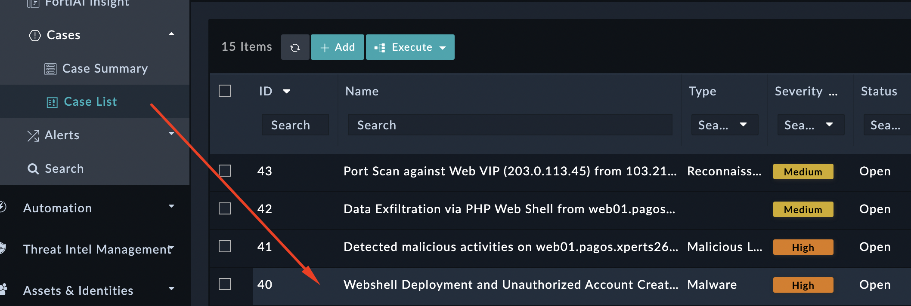
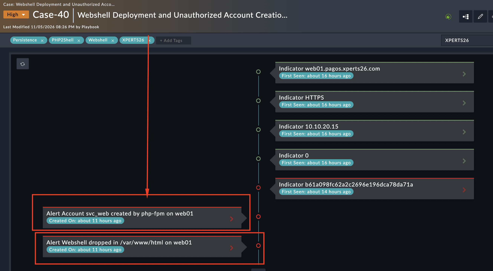
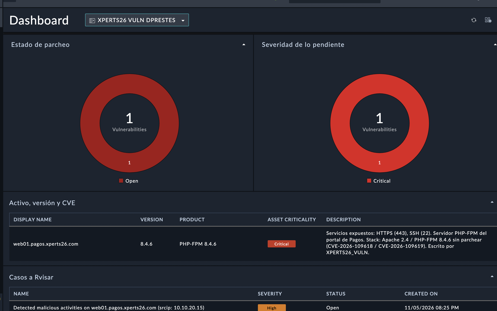
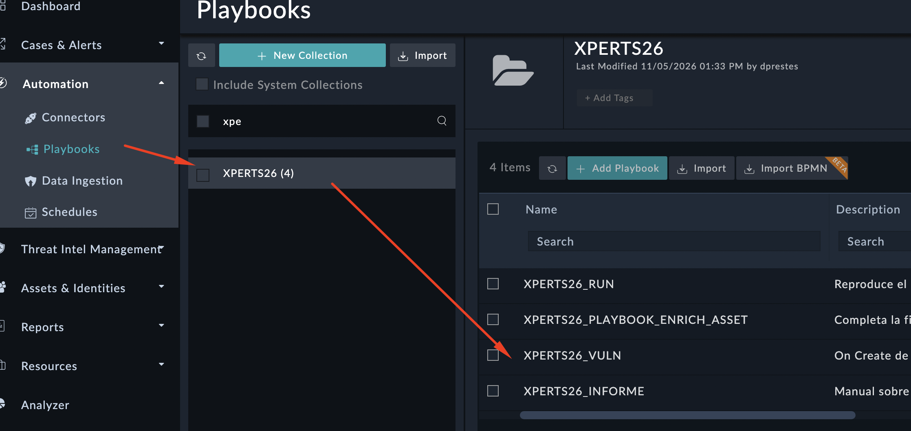
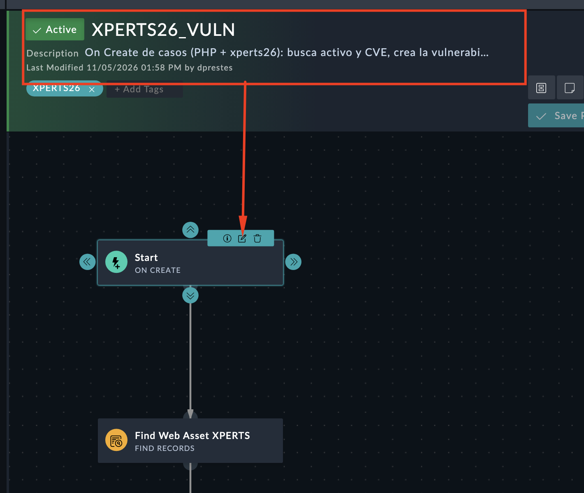
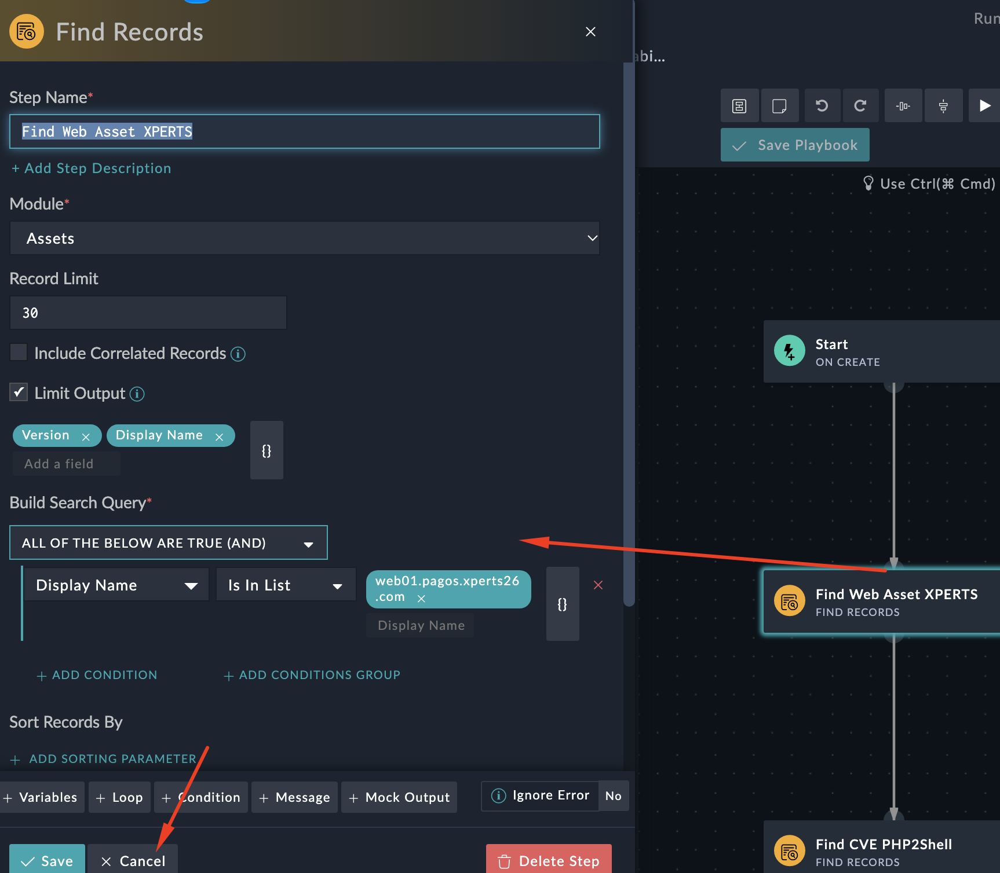

3. Tarea 3 — Instalación: qué deja dentro y con qué identidad#
3.1. Objetivo#
Duración: 15–20 min
Tareas:
Descubrir la creación de la cuenta de servicio svc_web
Localizar la escritura de la web shell
Atribuir ambas acciones al proceso correcto
Verificar la versión de PHP vulnerable en el dashboard
3.2. Pasos#
Abre el caso de severidad High que menciona el despliegue de la web shell.


En las alertas, a nivel de timeline, haciendo drilldown a las alertas: localiza los eventos de auditoría de Linux: tipos "SYSCALL", "EXECVE" y "PATH".


Identifica qué proceso ejecuta la creación de la cuenta y con qué identificador de usuari
Recuerda que puedes verlo en el el resumen AI del caso, consultando al agente FortiAI o yendo al source data de la alerta.
Localiza la ruta exacta del fichero escrito en el directorio web.
Recuerda que puedes verlo en el el resumen AI del caso, consultando al agente FortiAI o yendo al source data de la alerta.
Abre el dashboard XPERTS26 VULN DPRESTES y en la tabla de activos verifica la versión de PHP que lleva web01 y la línea de su descripción, firmada por el playbook (fíjate en quién la escribe).


Investiga como se alimenta este dashboard. Pistas:
En la descripción del activo web01 se marca la vulnerabilidad, parece que lo escribe un playbook
Analiza el playbook per NO LO EDITES NI EJECUTES:


Revisa los pasos que se dan para alimentar los paneles de gestión de vulnerabilidades. Dale a EDITAR PARA VER EL DETALLE PERO LUEGO CANCELA Y NO GUARDES CAMBIOS
Este playbook utiliza el caso PHP2Shell para demostrar cómo podemos cruzar la información de un incidente con el inventario de activos y la inteligencia de vulnerabilidades, automatizando tareas que normalmente tendría que realizar un analista.
En este laboratorio simplificamos deliberadamente el alcance: trabajamos con un servidor concreto (web01.pagos.xperts26.com) y dos CVE conocidas. El playbook recupera la versión de PHP registrada en el activo, consulta el catálogo de CVE y genera una ficha de vulnerabilidad, vinculándola con el activo y documentando los resultados en el caso.
¿Cómo llevaríamos esto a un entorno real?
En lugar de consultar un único servidor, podríamos recorrer automáticamente todos los activos de la CMDB que tengan identificados sus componentes y versiones de software. Para cada componente, contrastaríamos el fabricante, producto y versión con los rangos afectados del catálogo CVE, determinando qué sistemas presentan vulnerabilidades conocidas.
A partir de ahí, las posibilidades de automatización son mucho mayores: enriquecer cada hallazgo con CVSS, EPSS y CISA KEV, cruzarlo con la exposición del activo y con alertas reales del IPS, calcular prioridades de remediación, generar tareas, asignar responsables y comprobar posteriormente si la vulnerabilidad ha sido corregida.
Por ejemplo, no tendría la misma prioridad un servidor PHP vulnerable aislado que otro publicado en Internet y sobre el que FortiGate ya ha detectado intentos de explotación. Esa combinación de contexto es precisamente donde un SIEM y un SOAR pueden aportar mucho valor.
El objetivo del laboratorio no es construir un escáner de vulnerabilidades completo, sino demostrar el flujo de automatización. Hoy utilizamos un activo y unas CVE predeterminadas para que el ejercicio sea reproducible. En un despliegue real, incorporaríamos el descubrimiento, la correlación automática entre versiones y CVE, y la priorización dinámica, manteniendo el mismo concepto de enriquecimiento y orquestación del incidente. Se podrían incluso introducir pasos dentro del playbook con llamadas a FortiAI para analizar y aportar contexto al proceso de gestión de vulnerabilidades.




Preguntas de control
Las preguntas de control de esta tarea están publicadas en la web oficial de la competición XPERTS26. Entra con tu equipo para responderlas y validar el progreso del laboratorio.
👉 Accede a la plataforma de la competición para enviar tus respuestas.